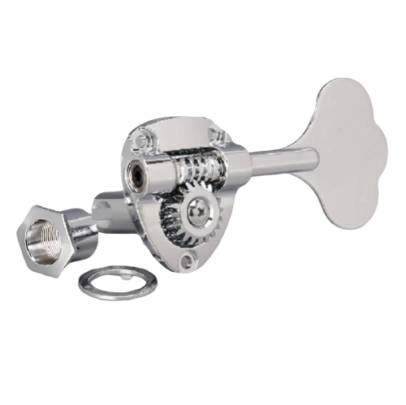
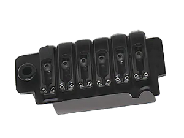
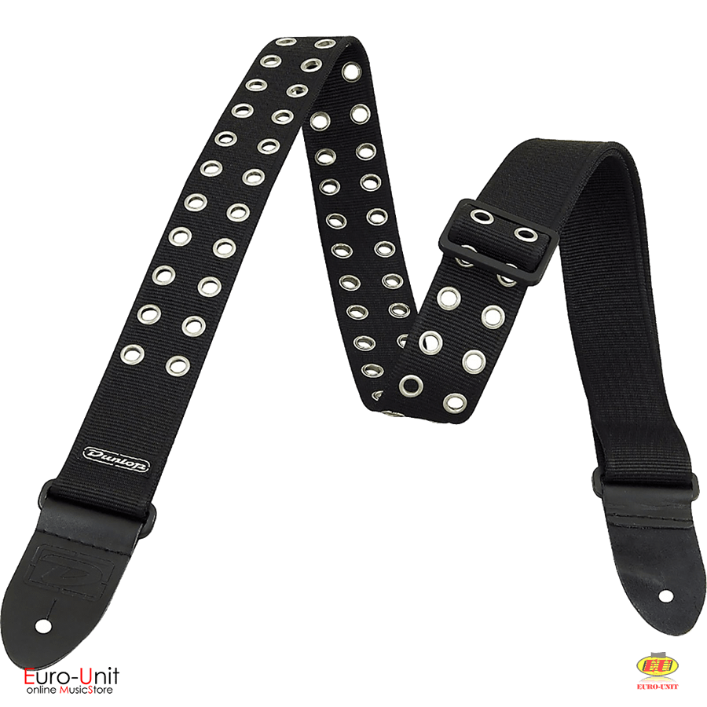
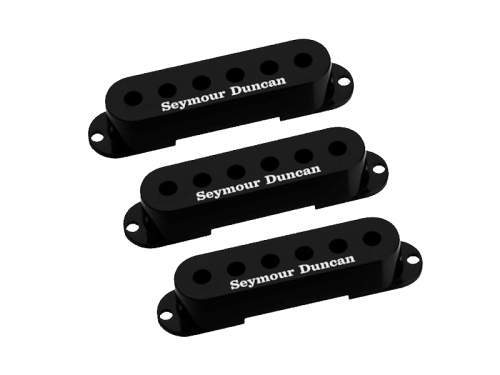
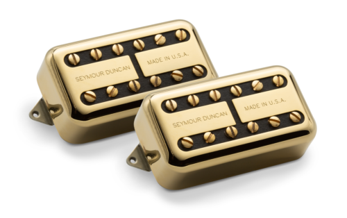
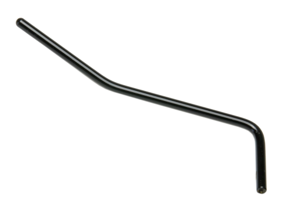

Gotoh Pegs GB11W

Gotoh Wilkinson VS100N Vintage Tremolo

Dunlop D3819 BK Grommet Guitar Strap

Seymour Ducan pickup cover

Seymour Duncan Psyclone Tron Humbucker gold

Gotoh Floyd Rose Arm A-7